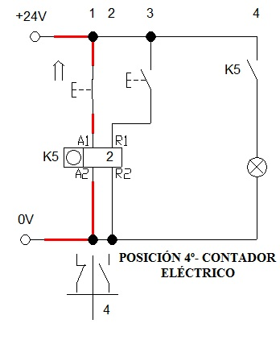

Contadores
Se denomina contador a una variable cuyo valor se incrementa o decrementa en un valor fijo (en cada iteración de un bucle). Un contador suele utilizarse para contar el número de veces que itera un bucle.
Otra definocion de contador con enfoque a la programacion es:
La construcción de un contador es una de las técnicas más comunes en la realización de diagramas de flujo.
Es una variable en la memoria que se incrementará en una unidad cada vez que se ejecute el proceso.
El contador se utiliza para llevar la cuenta de determinadas acciones que se pueden solicitar durante la resolución de un problema.
La inicialización consiste en asignarle al contador un valor inicial, es decir el número desde el cual necesitamos se inicie el conteo. El contador contara las iteraciones dentro del algoritmo o contara el numero de registro q desees.Ejemplo
Generalmente se inicializa con el valor 0
c <-- 0;
REPITA
Escribir ('hola amigos')
c <-- c + 1
Hastas que c=100
Este ejemplo escribirá 100 veces "hola amigos" por pantalla
Sumador:
Es una variable que está en ambos miembros de una asignación interna a la que se le suma un valor variable.Es una variable que como su nombre lo indica, suma sobre sí misma un conjunto de valores, al finalizar
con el ciclo contendrá, en una sola variable, la sumatoria de todos los valores, que cumplen una determinada condición. Es necesario haber inicializado en un momento previo a esta variable, ya que va a ser leído su contenido.
El sumador acumulara en operaiones sencillas o complejas segun lo desees, dentro del algoritmo. EJEMPLO
s<--0
c<--0
Repita
Escribir ('Ingrese Temperatura ');
Leer(t)
c<--c+1 ......................CONTADOR
s<-- s+t ......................SUMADOR
hasta c= 10
prom<-- t/c;
La diferencia entre un contador y un acumulador es que mientras el primero va aumentando en una cantidad fija preestablecida, el acumulador va aumentando en una cantidad o valor variable.

Ver el siguiente video como un complemento de lo antes mensionado